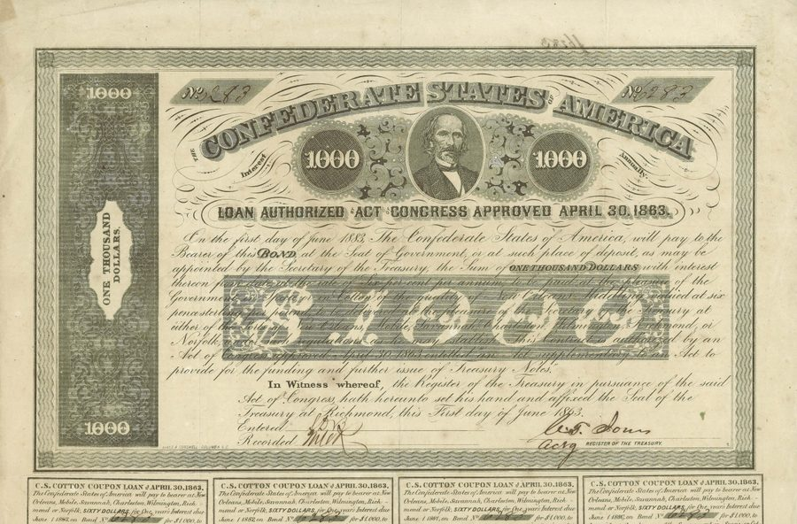

Exhibitions
Online Exhibitions

On view · Featured
The Birth of the Stock Market
The Dutch East India Company and the origins of equity finance in 17th-century Amsterdam — the world’s first publicly traded company and the market it created.

On view
Women as Investors
A hidden history of capital: nine documents that trace women’s participation in financial markets from 18th-century Paris to early-twentieth-century America.

On view
Financing War
How governments borrowed to fight: six documents tracing war finance from the American Revolution to the Second World War — and the promises they kept and broke.